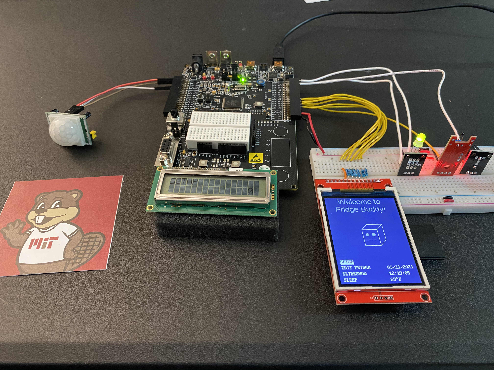
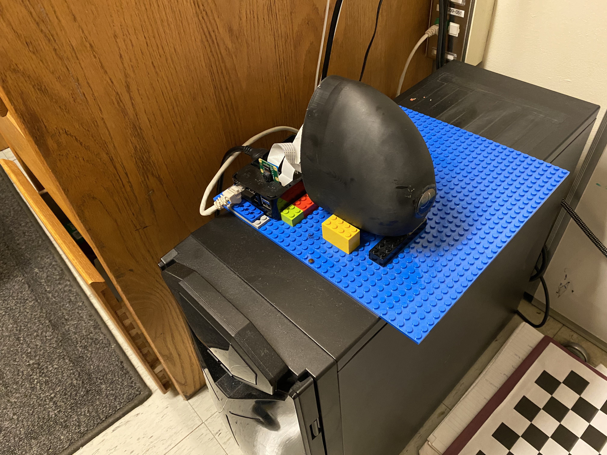

This page is still under construction
Fridge Buddy - Final Project 6.115 (Microcomputer Project Lab)

Designing an Autonomous Underwater Vehicle - MIT Marine Robotics Team

SoFi, the Soft Robotic Fish - MIT CSAIL UROP

Twin Propeller Angle Control - Final Lab 6.302 (Feedback Control Systems)